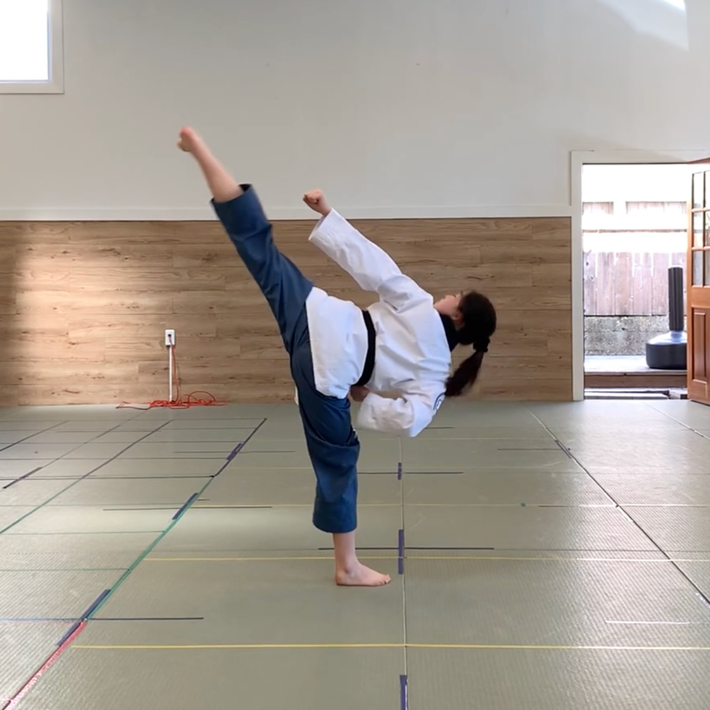
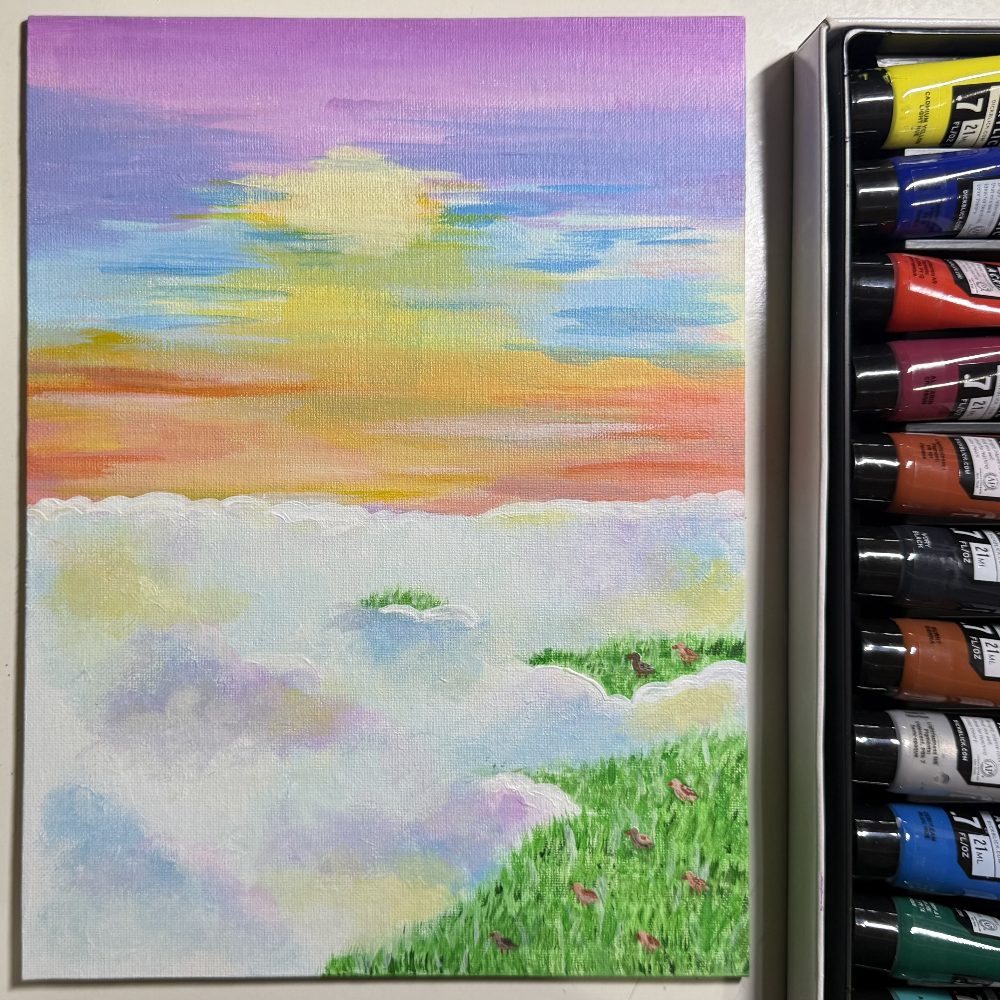
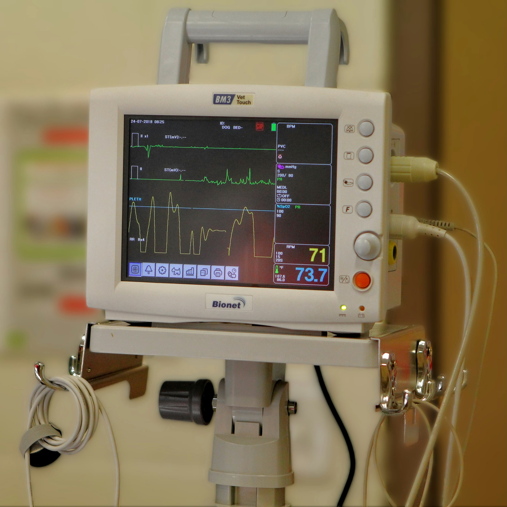

Mechanical Engineering Portfolio
I am a junior Mechanical Engineering student at UC Berkeley with hands-on experience in medical devices, wearable robotics, and rapid product development. I enjoy solving engineering challenges that bridge design, testing, and functionality.
Outside of university, I'm a black belt in Taekwondo and create art, activities that keep me disciplined, focused, and creative.



I aim to build a career in the healthcare field as an engineer, working on solutions that improve patient care and merge technology with human needs.